Kompleksowa koncepcja urbanistyczno-architektoniczna z precyzyjnym podziałem parceli, analizą nasłonecznienia i pełną dokumentacją do pozwolenia na budowę.
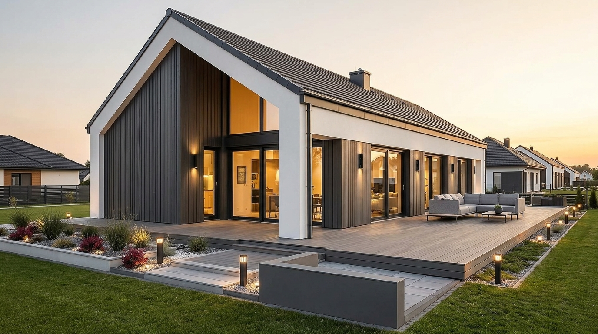
Odpowiedź głównego projektanta w 24h · Bez zobowiązań
Głównym celem projektu było wygenerowanie maksymalnego wskaźnika powierzchni użytkowej (PUM) przy bezkompromisowej intymności akustycznej i wizualnej dla każdego z lokali. Każdy segment funkcjonuje jak niezależny dom jednorodzinny — z prywatnym ogrodem, dedykowanymi miejscami postojowymi i odrębną strefą wejściową.
Dzięki przemyślanej orientacji względem stron świata, przesunięciom brył i podwójnym ścianom dylatacyjnym zminimalizowano straty energii, a strefy dzienne otrzymały optymalne doświetlenie południowo-zachodnie. To projekt przygotowany pod kątem racjonalnych kosztów wykonawczych i szybkiej sprzedaży inwestycji na wczesnym etapie realizacji.
Weryfikujemy zapisy MPZP/WZ, eliminujemy ryzyka prawne i optymalizujemy bilans miejsc postojowych, wyciągając 100% bezpiecznego PUM z każdego ara gruntu.
Ergonomiczny układ dróg wewnętrznych, przejść pieszych i sieci mediów — bez ślepych zaułków i bez marnowania cennej powierzchni biologicznie czynnej.
Standard WT2021, integracja z pompami ciepła i fotowoltaiką. Duże przeszklenia i przemyślane układy wnętrz tworzą produkt pożądany przez wymagających nabywców.
Spójna, skoordynowana dokumentacja konstrukcyjna i wykonawcza instalacji. Wykonawca na budowie otrzymuje precyzyjne wytyczne, co wyklucza kosztowne poprawki.
Jako główny projektant koordynuję wszystkie branże (konstrukcję, drogi, sieci sanitarne, energetykę). Nie tracisz czasu na spory między projektantami.
Przejmujemy pełną reprezentację formalną: od uzgodnień zjazdów i gestorów sieci po prawomocną decyzję o pozwoleniu na budowę (PnB). Zero przestojów.
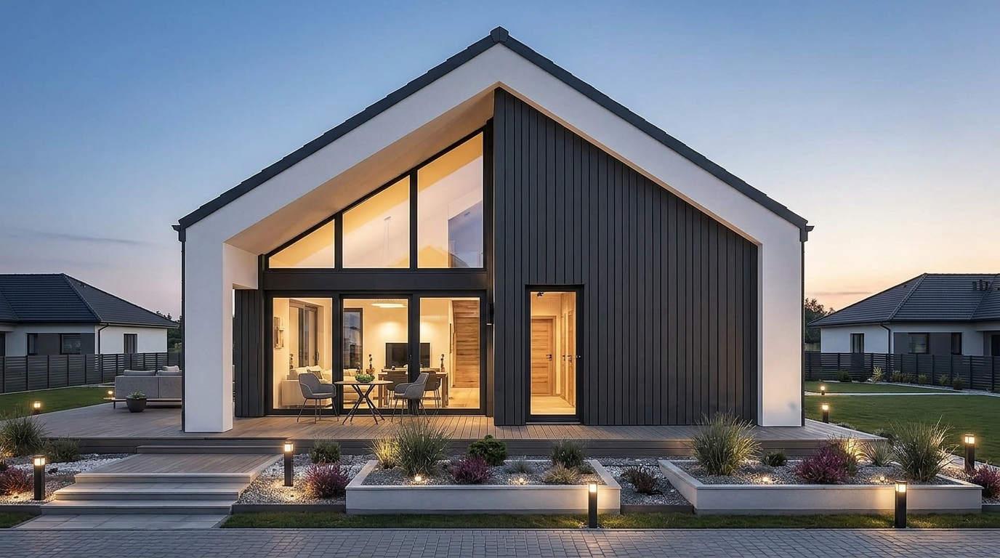
Osiowe ujęcie ściany szczytowej z portalową białą ramą i panoramicznym przeszkleniem.
Szerokokątny widok na taras wypoczynkowy, strefę relaksu i fasadę boczną.
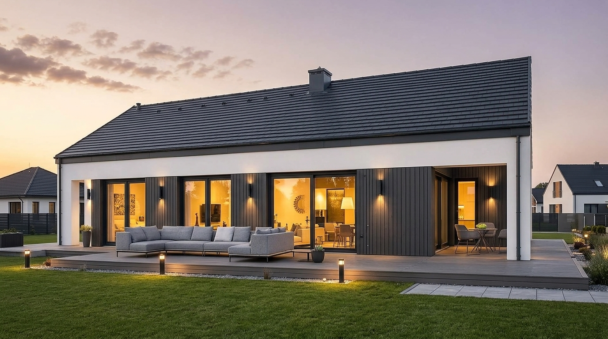
Rytmiczny układ przesuwnych przeszkleń i pionowego szalunku drewnianego.
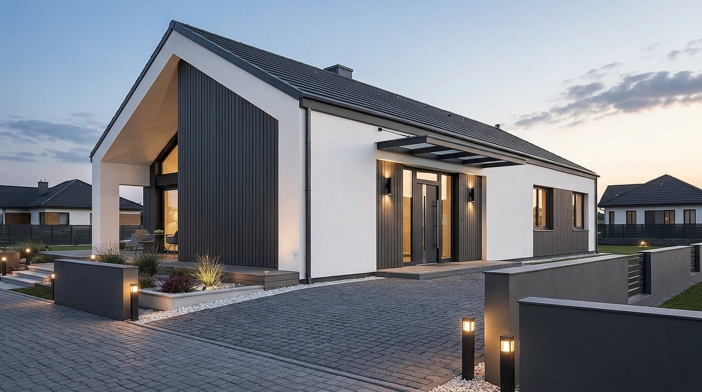
Nowoczesne zadaszenie wejścia, podjazd z kostki i murki z oświetleniem LED.
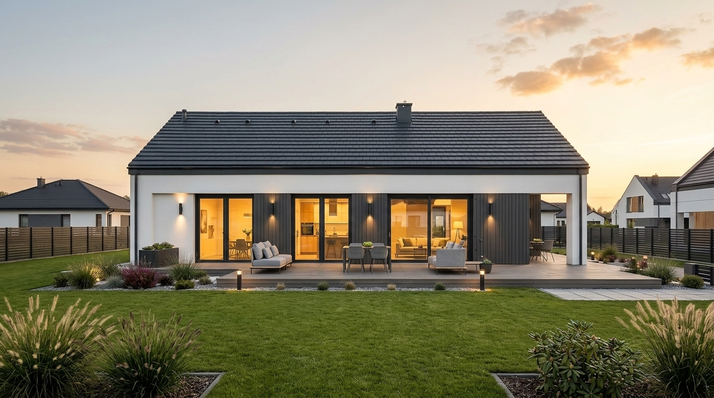
Prywatna strefa rekreacyjna mieszkańców z wyjściem na trawnik.
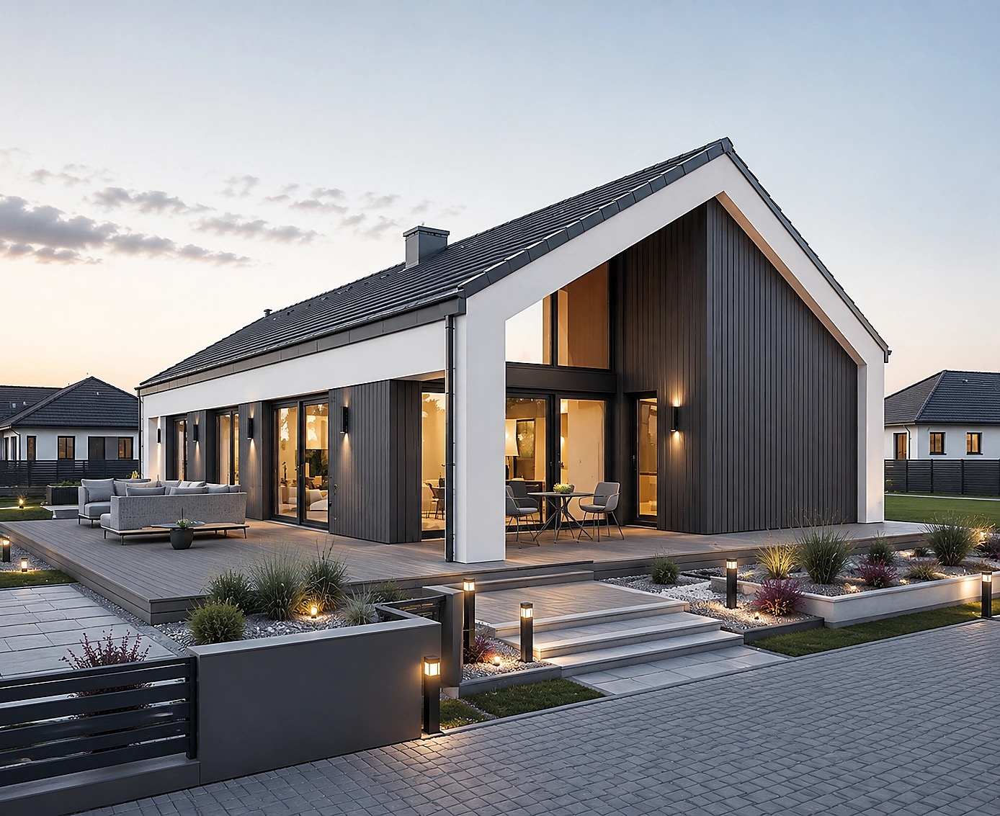
Całościowa kompozycja bryłowa w relacji z zagospodarowaniem terenu i drogą.
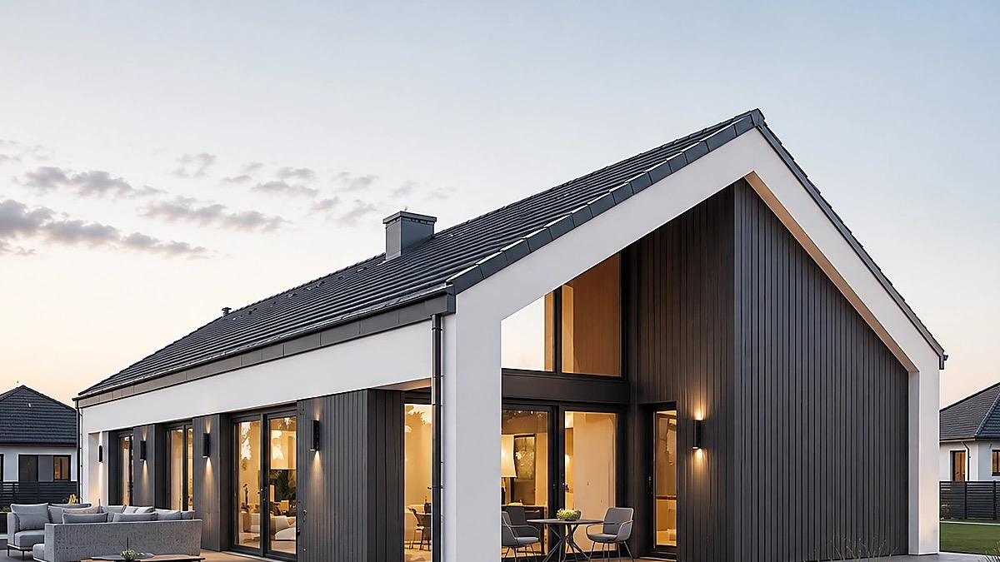
Zbliżenie na geometryczną białą ramę, trójkątne przeszklenie i komin na kalenicy.
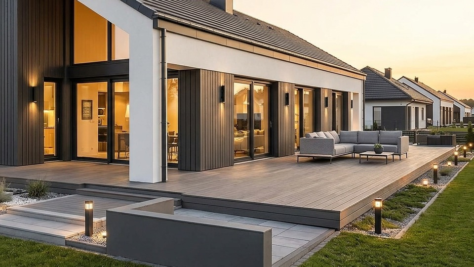
Detal drewnianego decku, mebli ogrodowych i podświetlanych donic z trawami.
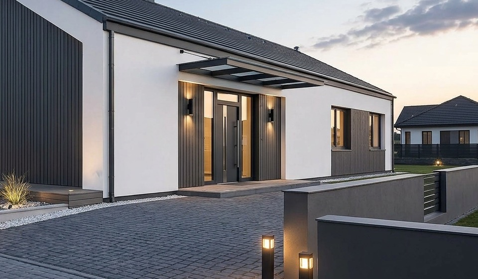
Nowoczesne drzwi zewnętrzne, szklane zadaszenie oraz słupki oświetleniowe.
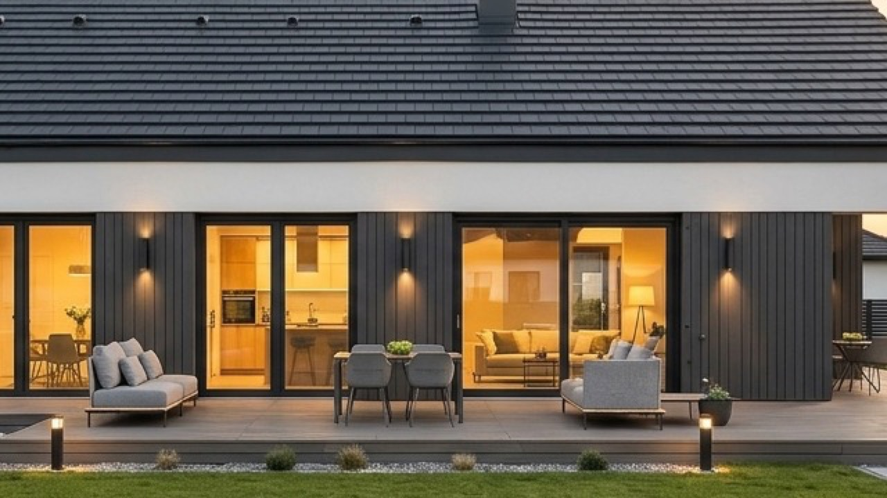
Szerokie przeszklenie otwierające część dzienną na taras, ukazujące wyspę kuchenną i salon.
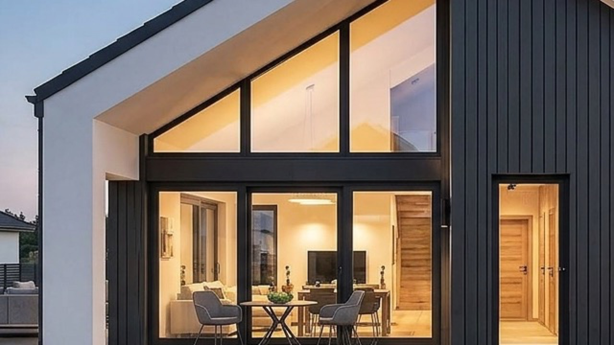
Zbliżenie na geometryczne przeszklenie w skosie dachu, widok na schody i oświetlony salon.
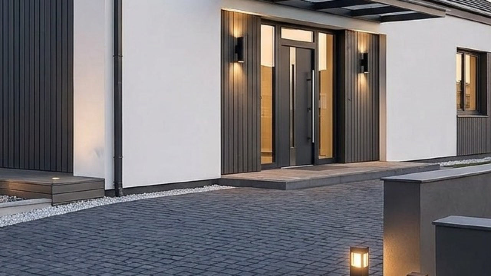
Nowoczesne skrzydło drzwiowe z długim pochwytem, szklane naświetle i kinkiety elewacyjne.
Porozmawiaj bezpośrednio z inżynierem z uprawnieniami bez ograniczeń. Otrzymasz rzetelną ocenę możliwości prawnych działki, estymację PUM oraz precyzyjny harmonogram formalności.